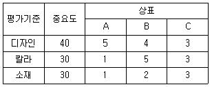

패션머천다이징산업기사 (2013-03-10 기출문제)
1과목: 패션마케팅
1. 패션머천다이저의 대한 설명 중 틀린 것은?
- 자기의 독창적인 발상이나 착상을 실현하기 위한 전 과정의 계획, 설계 및 조직을 하는 사람이다.
- 상품기획 부분의 총괄자로서 생산에서 판매부분에 이르기까지 광범위한 직무 영역을 가지고 새로운 브랜드 개발과 상품기획을 하는 사람이다.
- 유통업 분야와 제조업 분야에 따라 리테일 머천다이저와 어패럴 머천다이저로 구분된다.
- M.D 라고 불리며 상품 및 취급방법에 관한 책임자를 뜻한다.
(정답률: 알수없음)

2. 다음 중 어패럴 머천다이저로서의 자질이 아닌 것은?
- 자신의 차림새에 대한 표현력
- 정확한 예측력
- 적극적인 행동력
- 풍부한 상품지식
(정답률: 알수없음)
3. 소비자의 구매 대리인(buying agent) 역할을 하는 직종은?
- 직물 디자이너
- 패션 디자이너
- 리테일 머천다이저
- 모델리스트
(정답률: 알수없음)
4. ‘시미주 시게루’의 상품구성 이론에서 분류한 일반적인 상품군이 아닌 것은?
- 중점상품
- 모조상품
- 전략상품
- 보완상품
(정답률: 알수없음)
5. 다음 중 패션마케팅을 정의하기 위한 핵심개념이 아닌 것은?
- 필요(needs)와 욕구(wants)
- 소매업자(retailer)
- 가치(value)와 만족(satisfaction)
- 교환(exchange) 및 거래(transaction)
(정답률: 알수없음)
6. 패션바이어의 직무가 아닌 것은?
- 사입 기획
- 재무 기획
- 상품구성 기획
- 생산촉진 기획
(정답률: 알수없음)
7. 제품에 대한 경쟁적 위치를 선정하고 특정 시장내에서 자기 브랜드의 위치를 확인할 수 있는 것은?
- 시장세분화
- 표적시장
- 제품다양화
- 브랜드 포지셔닝
(정답률: 알수없음)
8. 다음의 의류상품기획 과정의 단계 중 가장 먼저 해야 할 작업은?
- 제품원가계산
- 품평 및 수주회의
- 아이템 구성 및 물량계획
- 대량생산
(정답률: 알수없음)
9. 다음 중 VMD가 해당하는 전략은?
- 제품전략
- 가격전략
- 유통전략
- 판촉전략
(정답률: 알수없음)
10. 마케팅의 기본 개념인 ‘필요와 욕구’에 대한 설명 중 틀린 것은?
- 욕구(wants)에 의해 개성이나 문화가 창조된다.
- 필요(needs)는 가장 원초적인 욕망이다.
- 인간에게 있어서 필수적인 무언가 결여된 상태를 욕구(wants)라고 한다.
- 현대에 와서 패션상품은 요구(wants)에 초점을 맞추어 만들어진다.
(정답률: 알수없음)
11. 성숙기에 돌입하여 된 패션시장 상황에 적합하지 않은 머천다이징의 전략은?
- 의사결정 단계의 확대
- 재고감소
- 해외판로 모색
- 상표확장
(정답률: 알수없음)
12. 시장세분화 변수 중 심리적 변수가 아닌 것은?
- 라이프스타일
- 추구혜택
- 감각
- 패션수용도
(정답률: 알수없음)
13. 우리나라 국민의 평균 수명은 점차 증가되는 반면 출생률은 감소하여 인구의 고령화가 빠르게 ㄷ진행되고 있다. 이러한 내용에 해당하는 거시적 환경은?
- 사회문화적 환경
- 기술적 환경
- 생태학적 환경
- 인구통계학적 환경
(정답률: 알수없음)
14. 통합적 가격결정에서 적정가격수준을 제시하는 것은?
- 원가 중심 가격
- 구매자 중심 가격
- 경쟁사 중심 가격
- 목표수익률 중심 가격
(정답률: 알수없음)
15. 리테일 머천다이징의 중요성에 관한 설명 중 틀린 것은?
- 패션상품의 시한성이 높아 최적의 시기, 상품, 물량에 대한 기능이 중요하다.
- 유행이 지속적으로 변화하기 때문에 빠른 상품회전율이 요구된다.
- 계절의 영향을 받기 때문에 이를 고려한 업무가 되어야 한다.
- 원자재와 부자재의 발주에 따른 대량생산에 이르는 전체과정의 흐름을 유지하는 것이 중요하다.
(정답률: 알수없음)
16. ABC 분석방법에 의해 주력상품, 준주력 상품, 신상품으로 분류하였다. 각 상품군에 대한 적합한 전략에 대한 설명이 옳은 것은?
- 신상품은 구색부족 방지에 최우선으로 노력한다.
- 준주력상품군들 중 신장이 기대되는 상품은 구색 부족 방지에 최우선으로 노력한다.
- 주력상품은 재고량 억제에 힘쓴다.
- 준주력상품은 일정기간의 테스트 기간이 필요하다.
(정답률: 알수없음)
17. 기업형 수직적 경로구조(corporate VMS)에 대한 설명이 틀린 것은?
- 기업이 생산과 유통을 모두 소유함으로써 결합 되는 형태이다.
- 도ㆍ소매상이 제조업체를 소유하게 되는 전방통합(forward integration)과 제조업체가 도ㆍ소매상을 소유하는 경우인 후방통합(backward integration)으로 나뉜다.
- 많은 직영점을 거느리고 있는 대기업의 경우 전방통합(forward integration)이며, 유통업체의 자체브랜드(PB 상품)을 생산하는 제조업체는 후방 통합에 속한다.
- 전방통합(forward integration)은 브랜드의 이미지를 일률적으로 관리할 수 있고, 후방통합(backward integration)은 대량매입을 통한 생산자에 대한 지배력을 강화할 수 있는 장점이 있다.
(정답률: 알수없음)
18. SPA(Specialty Store Retailer of Private Label Apparel)에 대한 설명으로 틀린 것은?
- SPA란 제조소매업을 말한다.
- 소매업이 독자적인 기획, 생산, 시스템을 가진 형태이다.
- 미국의 Gap, 스페인의 Zara, 스웨덴의 HA&M등이 해당된다.
- 팔다 남은 재고는 전량 제조회사가 책임지는 것을 원칙으로 한다.
(정답률: 알수없음)
19. 패션 브랜드 A, B, C의 가상적인 속성점수표이다. 사전편집식에 의해 상표를 선택한다면 어느 상표가 선택될 수 있는가?

- A
- B
- C
- 모두선택
(정답률: 알수없음)
20. 다음 중 패션마케팅의 개념 및 특징에 대한 설명이 틀린 것은?
- 패션마케팅이란 계절별 패션상품이 원자재에서부터 의류제조업체, 구매활동이 이루어지는 소매상을 거쳐 소비자에게 이르기까지의 상품의 흐름을 유지하려는 다각적인 활동을 의미한다.
- 패션마케팅은 소비자의 입장보다는 기업의 입장에서 전개되어야 한다.
- 패션마케팅은 소비자가 원하는 패션상품을 기획, 제조, 공급하는 기업 활동을 의미한다.
- 패션마케팅 활동은 패션상품이 지니고 있는 라이프 사이클의 한정성이나 감각적인 부가가치 희소가치 등의 기본개념이 전개되어야 한다.
(정답률: 알수없음)
2과목: 패션소재기획
21. 양모섬유의 스케일층으로 인하여 나타나는 특성이 아닌 것은?
- 방적성
- 축용성
- 권축
- 내마찰성
(정답률: 알수없음)
22. 소재기획 시 유행예측 정보의 수집 시기는?
- 시즌 24개월 전
- 시즌 12개월 전
- 시즌 6개월 전
- 시즌 3개월 전
(정답률: 알수없음)
23. 견섬유를 불꽃 가까이 가져갈 때 나타나는 현상은?
- 녹는 듯이 오그라듦
- 녹지만 오그라들지는 않음
- 녹지 않고 오그라듦
- 녹지도 않고 오그라들지도 않음
(정답률: 알수없음)
24. 품질인증 마크의 분류 중 환경 마크에 해당하는 것은?
- 굿 디자인 마크(good design mark)
- 골드 다운 마크(gold down mark)
- 에코마크(eco mark)
- KD 마크(Korea industrial standard mark)
(정답률: 알수없음)
25. 인조섬유의 제조공정에서 토우(tow)를 적당한 길이로 절단하여 만든 섬유는?
- 데니어(denier)
- 스테이플파이버(staple fiber)
- 모노필라멘트(monofilament)
- 멀티필라멘트(multifilament)
(정답률: 알수없음)
26. 패션 이미지에 따른 소재 및 색채 감성의 설명이 옳은 것은?
- 에스닉(ethnic)-파스텔 색조의 매끄럽고 부드러운 광택 소재
- 시크(chic)-무채색 계열의 부드럽고 단순한 촉감의 소재
- 로맨틱(romantic)-따뜻한 색상계열로 유행에 좌우되지 않은 심플한 소재
- 클래식(classic)-감미로운 색상계열의 소박한 면이나 실키한 느낌의 소재
(정답률: 알수없음)
27. 다음 중 소재기획의 특성을 크게 3가지로 구분했을 때 해당되지 않는 것은?
- 소재방향 설정
- 사용용도의 다양성
- 생산과 소비의 시간 격차
- 통합적 과정
(정답률: 알수없음)
28. 스테이플(staple) 섬유로부터 실을 만드는 공정은?
- 개면
- 혼면
- 방적
- 방직
(정답률: 알수없음)
29. 다음 중 소재기획 프로세스에 해당되지 않는 것은?
- 정보수집
- 패션 포케스팅(forecasting)
- 홍봄매체 결정
- 마켓 니드(maret need) 조사
(정답률: 알수없음)
30. 감성에 따른 소재의 연결이 틀린 것은?
- 젖은(wet)-벨베틴(velveteen)
- 매끄러운(flat)-새틴(satin)
- 얇은(thin)-퀼팅(quilting)
- 딱딱한(hard)-데님(denim)
(정답률: 알수없음)
31. 보일(voile) 직물에서 느낄 수 있는 감성은?
- 얇다(thin)
- 딱딱하다(haed)
- 촉촉하다(wet)
- 매끄럽다(flat)
(정답률: 알수없음)
32. 가죽의 표피를 고운 샌드페이퍼로 깍아 내어 기모를 낸 것으로 촉감이 부드럽고 우아하며 자연스러운 광택의 피혁 소재는?
- 나파(nappa)
- 누벅(nubuck)
- 스웨드(suede)
- 말보로(malboro)
(정답률: 알수없음)
33. 트랜드 감성 중 남성취향의 이미지로 독립성이 강하면서 차분한 남성미를 느끼게 하는 것은?
- 엑조틱(exotic) 이미지
- 스포티(spoety) 이미지
- 미니시(mannish) 이미지
- 모던(modern) 이미지
(정답률: 알수없음)
34. 소재기획 프로세스의 과정 중 상품 구성, 실(yaen)방향 설정, 시즌별 컬러라인 설정에 해당하는 것은?
- 시생산품 제작 방향
- 패션 정보 분석
- 소재기획 컨셉트
- 소재 발주
(정답률: 알수없음)
35. 실에 대한 설명으로 옳은 것은?
- 면, 마섬유는 단사로 만들 때 일반적으로 S꼬림을 준다.
- 합연사는 2종 이상의 단사를 2가닥 이상 합치고 꼬아서 1가닥으로 만든 실이다.
- 굵은 실일수록 꼬임이 적고, 가는 실일수록 많은 꼬임이 필요하다.
- 합연사는 실의 비틀림을 안정화시키기 위하여 상연과 하연의 꼬임 방향을 같게 한다.
(정답률: 알수없음)
36. 폴리에스테르 섬유에 대한 설명 중 틀린 것은?
- 태가 좋으며 구김이 가지 않는다.
- 생분해가 되는 환경친화성 섬유이다.
- 흡습성이 거의 없어 세탁 후 건조가 빠르다.
- 합성섬유 중에서 의류용으로 가장 많이 사용되는 섬유이다.
(정답률: 알수없음)
37. 의류 제품 착용 중에 봉제 부위가 미어졌을 경우 원단의 품질을 체크할 수 있는 가장 적합한 시험 항목은?
- 미모강도
- 스낵성
- 필링
- 실 미끄럼 저항도
(정답률: 알수없음)
38. 경편성물에 해당되지 않는 것은?
- 트리코(tricot)
- 파일(pile)
- 라셀(raschel)
- 밀러니즈(milanese)
(정답률: 알수없음)
39. 면섬유에 대한 설명으로 옳은 것은?
- 면은 염색성이 좋고 수축이 잘 일어나지 않아 의류소재로서 우수한 섬유이다.
- 구조적으로 왁스와 펙틴질로 이루어진 표피층을 가지고 있다.
- 미국에서 생산되는 길이가 짧은 면섬유는 고급 면직물을 만드는데 쓰인다.
- 면 내부구조의 가장 바깥쪽에는 파브릴층이 있고, 가장 안쪽에는 중공이 있다.
(정답률: 알수없음)
40. 의류업체의 소재기획 과정으로 옳은 것은?
- 소재 맵→정보 수집→이미지 맵ㆍ컬러 맵→스타일개발ㆍ소재 선정
- 스타일개발ㆍ소재선정→소재 맵→정보 수집→이미지 맵ㆍ컬러 맵
- 정보 수집→이미지 맵ㆍ컬러 맵→소재 맵→스타일개발ㆍ소재 선정
- 스타일개발ㆍ소재 선정→정보 수집→이미지맵ㆍ컬러맵→소재맵
(정답률: 알수없음)
3과목: 유통관리 및 광고
41. 다음 소매상 중 매장 내에서 취급하는 제품계열에 의한 기준으로 분류되지 않는 것은?
- 백화점
- 잡화상
- 전문점
- 셀프서비스 소매상
(정답률: 알수없음)
42. 차별적인 중간상 상표(private brand)를 확보하고 있는 소매업체를 유명제조업체와 비교하였을 때 장점이 아닌 것은?
- 점포 이미지를 차별화할 수 있다.
- 중간상 상표는 가격에서 경쟁력을 가질 수 있다.
- 인지도가 높고 명확한 브랜드 이미지가 확립되어 있다.
- 자체적인 판촉 활동으로 이익을 극대화할 수 있다.
(정답률: 알수없음)
43. 판매원의 역할이 아닌 것은?
- 고객관리
- 판매기술
- 코디상품제안
- 상품기획기술
(정답률: 알수없음)
44. 다음 중 교통광고와 관련이 없는 설명은?
- 지역 융통성이 있음
- 반복적 소구 가능함
- 효과 측정의 용이성
- 뉴스성 있음
(정답률: 알수없음)
45. 패션 리테일 머천다이징의 핵심개념은?
- 제품화 계획
- 상품선정과 구매
- 생산 계획
- 디자인 계획
(정답률: 알수없음)
46. 패션 유통관리의 형태 중 완사입제도의 설명에 해당하는 것은?
- 대리점주가 의류업체나 도매시장에서 상품을 사다가 판매하고, 팔다 남은 상품의 재고도 점주가 책임을 지는 것이다.
- 의류제조업체가 기획과 생산뿐만 아니라 판매도 책임지는 형태로 팔다 남은 상품의 재고는 재고회사가 책임지는 것이다.
- 재고에 대한 위험을 본사와 대리점주가 일정 부분씩 부담하는 것이다.
- 대리점주에게 상품을 제공하고 대리점주들은 판매에 따른 수수료를 받는 것이다.
(정답률: 알수없음)
47. 다음 중 바람직한 비주얼 머천다이징 실현으로 기대하기가 가장 어려운 것은?
- 기업문화 창조
- 판매동향 체크
- 상품 소구력 향상
- 효율적인 매장 내 상품관리
(정답률: 알수없음)
48. 구매원가와 판매가격의 차이를 뜻하는 것은?
- 마크 다운(mark down)
- 평균화 테크닉(averaging technique)
- 신소매가(new retail)
- 마크 업(mark up)
(정답률: 알수없음)
49. 패션업체의 광고예산 책정 방법 중 매출액 비례법에 대한 설명이 옳은 것은?
- 회사 자금사정상 다른 긴급한 비용을 모두 에산에 책정한 다음 나머지를 광고비용으로 책정하는 방법이 있다.
- 가장 논리적인 광고예산 책정방법으로 기업은 광고활동을 통하여 자사가 얻고자 하는 바가 무엇인지에 따라 예산을 책정한다.
- 현재 또는 예상되는 매출액의 일정비율을 사용하거나 또는 제품 판매가격의 일정비율을 촉진예산으로 산정하는 방법이다.,
- 제한된 자금을 가지고 있는 기업에서 광고를 위해 지나치게 많은 비용을 배분하지 않으려는 의도로 사용되는 경우가 많은 방법이다.
(정답률: 알수없음)
50. 매장 계획 시 페이싱(Facing) 형태에 관한 설명으로 옳은 것은?
- 페이스 아웃(Face Out) : 코디네이션으로 변화를 줄 수 있다.
- 슬리브 아웃(Sleeve Out) : 회전율이 가장 높다.
- 폴디드(Folded) : 꺼내 보기에 부담이 없다.
- 슬리브 아웃(Sleeve Out) : 디자인을 한 눈에 볼 수 있다.
(정답률: 알수없음)
51. 기업이 실시하는 PR(public relation) 프로그램에 해당되지 않는 것은?
- 정기간행물
- 특별행사
- 공공서비스 활동
- 쿠폰증정
(정답률: 알수없음)
52. 다음 중 비주얼 머천다이징(VMD)에 따른 상품제시방법 3가지에 해당되지 않는 것은?
- VP
- IP
- POP
- PP
(정답률: 알수없음)
53. 다음 중 사업기획에서 상품구매 계획을 수립할 때 중요한 두 가지 사항은?
- 재무기획, 상품구성기획
- 상품구성기획, 재고관리기획
- 재고관리기획, 영업전략기획
- 영업전략기획, 재무기획
(정답률: 알수없음)
54. 다음 중 상품구성에 관한 설명 중 잘못된 것은?
- 상품구성의 폭(width)은 소비자에게 제공하는 품목수이다.
- 상품구성의 깊이(depth)는 상품 라인의 수를 말한다.
- 좁고 깊은 구성은 소품종 다량구성을 말한다.
- 넓고 얕은 구성은 품목은 다양하나 사이즈는 제한된다.
(정답률: 알수없음)
55. 윈도우 디스플레이(window display)에 대한 설명이 틀린 것은?
- 점포안의 상품들을 가장 흥미로운 조합으로 통행인에게 보여주는 것이다.
- 상품특성, 사용상황, 점포 이미지 등을 전달하는 수단이다.
- 매출증대와 관련 없이 이미지 전달이 그 목적이다.
- 점포 내부와 외부를 연결하는 중요한 커뮤니케이션공간이다.
(정답률: 알수없음)
56. 마케팅 커뮤니케이션을 실행하기 위한 믹스전략에 대한 설명 중 옳은 것은?
- 광고는 메시지에 대한 가장 완전한 설명을 할 수 있는 요소로 비용에 대한 부담이 다소 적은 편이다.
- 홍보는 기업의 의도에 따라 표현할 수 있으며 게재횟수에 제한이 없다.
- 인적판매는 접촉할 수 있는 고객의 수가 제한적이나 고객의 욕구와 특성을 가장 잘 파악할 수 있다.
- 판매촉진을 위한 방법은 장기적인 관점에서 소비자에게 구매를 유도하는 방법이다.
(정답률: 알수없음)
57. 상품회전율 또는 재고자산 회전율(stock turnover ratio)이 낮거나 높을 때 생기는 문제에 대한 설명으로 옳은 것은?
- 재고자산 회전율이 낮으면 패션상품의 수요변화에 민감하게 대응할 수 없다.
- 재고자산 회전율이 높으면 할인혜택을 받을 수 있다.
- 재고자산 회전율이 낮으면 점포 이미지 형성에는 도움이 된다.
- 재고자산 회전율이 높으면 재고를 보관하고 관리하는데 비용이 더 많이 든다.
(정답률: 알수없음)
58. 상품의 구매활동 시 고려할 요소에 속하지 않는 것은?
- 타킷 고객
- 상품의 수량
- 상품의 가격
- 상권
(정답률: 알수없음)
59. 다음 중 내의류, 스타킹과 같이 편의적 속성이 강한 제품의 유통 커버리지 전략은?
- 선택적 유통
- 전속적 유통
- 집약적 유통
- 직접 유통
(정답률: 알수없음)
60. 신제품을 상품 구색에 추가하였을 때 매상이 증가하는 경우와 그렇지 못한 경우가 있다. 상품라인이나 색상을 추가하여도 매상이 더 이상 향상되지 않는 현상은?
- 한계유효성
- 상품유효성
- 한계생산성
- 효용가치성
(정답률: 알수없음)
4과목: 패션디자인론 및 의복구성학
61. 신사복 치수 규격에서 체형분류를 위해 사용하는 드롭(drop)이란?
- 엉덩이둘레와 허리둘레의 차이
- 엉덩이둘레와 가슴둘레의 차이
- 가슴둘레와 허리둘레의 차이
- 신장과 가슴둘레와의 차이
(정답률: 알수없음)
62. 다음 중 패션의 발생기원과 가장 관계없는 것은?
- 계급사회에서의 모방행위
- 끊임없는 변화에 대한 인간의 본능적인 욕망
- 신기한 것에 대한 동경
- 타인과 완전히 다르고자 하는 욕구
(정답률: 알수없음)
63. 길과 연결된 소매가 아닌 것은?
- 레글런 소매
- 요크 소매
- 랜턴 소매
- 기모노 소매
(정답률: 알수없음)
64. 패션전파이론 중 하향전파이론에 대한 설명으로 옳은 것은?
- 사회 안에 사람들이 공통적인 취향을 갖게 되어 유행이 전파된다.
- 소수민족(흑인, 인디안 등) 청소년 등의 하위집단의 패션이 퍼진다.
- 패션선도자는 모든 계층에 존재하여 패션추종자는 모방을 한다.
- 패션의 동기를 상하 그룹간의 수직방향에 의해 설명한다.
(정답률: 알수없음)
65. 색입체의 관한 설명이 틀린 것은?
- 색의 4속성을 3차원 공간 속에 계통적으로 배열한 것이다.
- 색상은 원으로, 명도는 직선으로, 채도는 방사선으로 나타낸다.
- 명도는 무채색 축에서 위로 올라가면, 저명도, 아래로 내려가면 고명도가 된다ㅑ.
- 채도는 중심축으로 들어가면 저채도, 바깥 둘레로 나오면 고체도가 된다.
(정답률: 알수없음)
66. 다음 중 동일한 면적에서 가장 크게 느껴지는 색은?
- 주황
- 노랑
- 연두
- 보라
(정답률: 알수없음)
67. 패션디자인의 요소 중 선에 대한 설명으로 틀린 것은?
- 선의 성격에 따라 형의 성격도 결정된다.
- 사선은 수평선보다 운동감을 느끼게 한다.
- 무게를 느끼게 하는 선은 주로 디테일선, 솔기선, 주름선, 장식선 등이 있다.
- 색채, 재질, 실루엣선, 그리고 실루엣 안의 선은 목든 의상에 반드시 존재한다.
(정답률: 알수없음)
68. 한 방향 연단에 적합하지 않는 옷감은?
- 편성물
- 평직물
- 벨벳
- 골덴
(정답률: 알수없음)
69. 시대별 유행 스타일 룩과 디자이너의 연결이 잘못된 것은?
- 가르송 룩-가브리엘 샤넬
- 몬드리안 룩-이브 생 로랑
- 크리주 룩-피에르 가르뎅
- 뉴 룩-크리스찬 디올
(정답률: 알수없음)
70. 소매원형에 관한 설명이 틀린 것은?
- 소매산의 높이와 진동둘레는 상관관계가 있다.
- 편하게 이동하면 소매산의 높이는 낮게 잡는다.
- 옷의 기능에 따라 A,H/4, A,H/6, A,H/8 또는 1~3cm,정도를 가감한다.
- 진둥둘레 치수는 앞 진동둘레와 귀 진공둘레 치수를 함께 계측한다.
(정답률: 알수없음)
71. 신도를 낮게 고정시키고 수축을 적게 하며 착용 후 세탁이 좋은 재봉사는?
- 면봉사
- 견봉사
- 나일론봉사
- 폴리에스테르봉사
(정답률: 알수없음)
72. 의복의 음영 또는 윤곽 등의 의미로, 의복을 착용한 상태의 전체적인 윤곽선 또는 이웃 라인(out line)을 일컫는 용어는?
- 디테일(detail)
- 트리밍(triming)
- 실루엣(silhouette)
- 웨이스트 라인(wait line)
(정답률: 알수없음)
73. 재봉사의 규격표시에 대한 설명 중 틀린 것은?
- 재봉사의 굵기는 실의 길이와 무게의 관계를 수치로 나타낸다.
- 번수는 일정 길이에 대한 무게, 데니어는 일정 무게에 대한 길이로 표시한다.
- 데이어는 항장식으로 데니어가 클수록 실이 굵다.
- 벙수는 항중식으로 번수가 클수록 실이 가늘다.
(정답률: 알수없음)
74. 생산작업지시서의 항목에 반드시 필요하지 않은 것은?
- 제품수량
- 완성 디자인
- 부자재의 종류
- 제품 단가
(정답률: 알수없음)
75. 영국 성공회 주교의 옷에서 시작된 것으로 소매부리를 넓게 하여 주름잡아 오그려 커프스를 단 소매는?
- 벨(bell)소매
- 기모노(kimono)소매
- 비숍(bishop)소매
- 랜턴(lantern)소매
(정답률: 알수없음)
76. 굴신체형이나 반신체형의 경우에는 보통 체형과 달리 특히 어느 부위의 비례가 차이가 많이 나는가?
- 앞가슴둘레, 뒷가슴둘레
- 앞허리둘레, 뒤허리둘레
- 앞목벌레, 허리둘레
- 앞길이, 등길이
(정답률: 알수없음)
77. 21세기 유행 현상에 대한 설명으로 틀린 것은?
- 프레타포르테보다 디자이너 오뜨꾸띄르가 패션트렌드를 이끌어가는 경향이다.
- 소수 상류층보다 대중이 유행을 이끌어가는 경향으로 이동한다.
- 고객 생활전반을 대상으로 하는 라이프스타일로 발전하고 있다.
- 개성화, 다양화, 단품화 경향으로 이동한다.
(정답률: 알수없음)
78. 다음 중 실루엣선에 의해서 형성되지 않는 것은?
- 길의 형태
- 칼라의 형태
- 소매의 형태
- 스커트 또는 슬랙스의 형태
(정답률: 알수없음)
79. 재단 작업 전에 하는 옷감 정리법의 주의 사항 중 틀린 것은?
- 풀기가 있는 옷감은 뒤쪽으로 물을 뿌리면서 다려준다.
- 옷감을 물에 담글 때는 주름이 잡히지 않도록 병풍식으로 접어서 담근다.
- 다리미를 사용할 때는 옷감이 늘어나지 않도록 누르는 형태로 다린다.
- 수축률이 큰 옷감의 경우는 물에 담갔다가 약간 축축한 상태까지 말린 후 다린다.
(정답률: 알수없음)
80. 소량생산을 전문으로 운영하는 기업에 효과적이며 재단의 정밀도가 높은 재단가는?
- 전동식 원형 칼날 재단기
- 전동식 수직 칼날 재단기
- 컴퓨터 재단기
- 철형판 재단기
(정답률: 알수없음)
5과목: 패션정보분석
81. PC(personal computer)를 이용한 패션정보 관리시스템의 특징이 아닌 것은?
- 정보의 효율적 관리
- 정보의 검색이 편리하고 용이
- 정보 추가나 시스템 보강이 불필요
- 기업에 산재된 정보의 입수, 체계적 축적 가능
(정답률: 알수없음)
82. 소비자 라이프스타일의 인구통계학적 변수가 아닌 것은?
- 성별
- 교육수준
- 지역
- 소득
(정답률: 알수없음)
83. 정보 수집에 있어서 높은 가치로 평가 받을 수 있는 정보의 요건이 아닌 것은?
- 최신(up to date)의 것
- 기밀성(secret)의 것
- 원천적(fountainhead)의 것
- 널리 공개(opening to the public)의 것
(정답률: 알수없음)
84. 라이프스타일에 대한 설명이 틀린 것은?
- 구매행동에 가장 가깝게 위치한 소비자 특성이다.
- 소비자의 의식, 활동, 태도 등을 포함하는 복합적인 생활의 틀이다.
- 소비자 구매형태에 중요한 영향을 끼친다.
- 소비자의 지리적, 경제적, 정치적 특성에 의해서만 형성된다.
(정답률: 알수없음)
85. 다른 상품보다 패션상품에서 충동구매가 많은 이유와 가장 거리가 먼 것은?
- 기능과 필요에 의한 가격, 품질, 색상 등의 구매계획 때문이다.
- 최근에 유행하는 정보를 얻기 위해 점포를 이용하는 방식 때문이다.
- 자신을 다른 사람들에게 아름답고 멋지게 보이고자 하는 욕망 때문이다.
- 교통수간의 발달과 임의시간과 수입 증대로 많은 상품에 노출되기 때문이다.
(정답률: 알수없음)
86. 기성복 의류 생산과정이 옳은 것은?
- 원부자재 구매→공업용 패턴제작→마킹→그레이딩→재간→봉제→검품→출하
- 원부자재 구매→마킹→공업용 패턴제작→그레이딩→재단→봉제→검품→출하
- 원부자재 구매→공업용 패턴제작→그레이딩→마킹→재단→봉제→검품→출하
- 원부자재 구매→마킹→그레이딩→공업용 패턴제작→재단→봉제→검품→출하
(정답률: 알수없음)
87. 패션트렌드 정보 중 가장 먼저 제시되는 것은?
- 소재
- 컬러
- 스타일
- 실루엣
(정답률: 알수없음)
88. 시장조사에 있어 경쟁브랜드 조사에 관한 내용에 해당되지 않는 것은?
- 경쟁브랜드의 동향파악을 위해서 MD콘셉트와 유통현황, 소비자 인지도 등을 조사한다.
- 경쟁브랜드의 제품 장ㆍ단점, 가격, 판촉기획 등을 조사한다.
- 자사가 소유한 패션상품의 구색이 부족하거나 오래되었을 때만 실시한다.
- 경쟁브랜드 정보는 작년 및 금년의 동업 타사 브랜드 리서치 정보를 말한다.
(정답률: 알수없음)
89. 다음 중 시계열로 분류한 패션정보의 성격이 다른 것은?
- 프로모스틸(Promostyl)
- 프리미에르 비종(Premiere Vision)
- 인터스토프(Interstoff)
- 엑스포 필(Expofil)
(정답률: 알수없음)
90. 표적시장 내 고객들이 경쟁제품을 비교 평가하는 척도가 아닌 것은?
- 자사 및 경쟁 브랜드의 중요한 속성들
- 자사 및 경쟁 브랜드의 기업구조
- 자사 및 경쟁 브랜드의 유사성 정도
- 자사 및 경쟁 브랜드의 평가기준
(정답률: 알수없음)
91. 패션트렌드 정보가 아닌 것은?
- 전체적인 패션 경향
- 아이템 및 이미지 경향
- 디테일 테크닉
- 소재, 색상 및 무늬
(정답률: 알수없음)
92. 자료수집 방법 중 서베이(survey)법을 이용할 때의 설명으로 옳은 것은?
- 개방형 질문형태는 자료 수집 후 분석이 용이하다.
- 어려운 질문은 설문지의 서두에 배치하는 것이 좋다.
- 주로 기술적인 연구에 적합하고 인과관계 조사에 사용되기도 한다.
- 선택형 질문형태는 조사자가 설문지 작성을 용이하게 할 수 있다.
(정답률: 알수없음)
93. 신규 점포에 대한 상권 분석을 위한 방법이 아닌 것은?
- 점포의 내부 자료
- 기술적 조사방법
- 규범적 모형
- 확률적 모형
(정답률: 알수없음)
94. 시장 조사 시 유의해야 할 사항이 아닌 것은?
- 인기상품을 조사한다.
- 시장 입지조건을 조사한다.
- 시장 규모와 시장 구조를 조사한다.
- 추측조사를 원칙으로 한다.
(정답률: 알수없음)
95. 스토어 아이텐티티(store identity) 구성요인에서 기본 세 가지 서브시스템의 설명으로 틀린 것은?
- 머천다이징 콘셉트(MC) : 상품개발, 상품구색, 가격
- 인텔리전스 콘셉트(IC) : 업태개발, 정보, 커뮤니케이션
- 휴먼웨어 콘셉트(HC) : 접객, 컨설턴트, 서브시스템
- 명확한 콘셉트는 필요 없으며 기성 가치관에 좌우된다.
(정답률: 알수없음)
96. 소비자의 라이프스타일을 활동, 관심, 의견 및 인구학적 특성에 맞추어 파악하려는 분석법은?
- 행동라이프스타일분석법
- A.I.O 분석법
- 태도영역분석법
- 사회경향분석법
(정답률: 알수없음)
97. 우리나라에서는 1995년 11월 수입병행제가 도입되었다. 그 이후 패션시장의 변화가 아닌 것은?
- 해외 유명 브랜드가 대거 수입되었다.
- 수입전문 멀티숍이 확산되었다.
- 수입업체들의 고정적인 물량확보가 쉽지 않았다.
- 수입 의류제품의 가격이 조금씩 상승하였다.
(정답률: 알수없음)
98. 다음 중 소비자 정보에 해당되지 않는 것은?
- 표적시장의 확인
- 구매패턴조사
- 착용경향 조사
- 라이프스타일 분석
(정답률: 알수없음)
99. 패션트렌드 예측에 사용되는 정보원으로 적절하지 않은 것은?
- 판매 기록
- 새로운 컬렉션 분석
- 하청업체에 장ㆍ단점 평가
- 소비자 착장실태 관찰
(정답률: 알수없음)
100. 다음 중 마케팅 정보 시스템(marketing information system)의 특징이 아닌 것은?
- 구조화된 문제를 대상으로 한다.
- 보고서를 사용한다.
- 사용자의 상호작용을 통한 정보를 제공한다.
- 원자료의 명확화를 통해 의사결정을 향상시킨다.
(정답률: 알수없음)